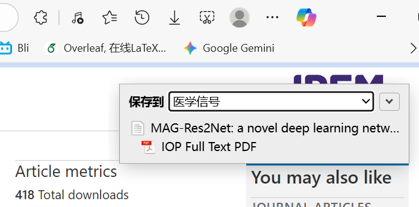
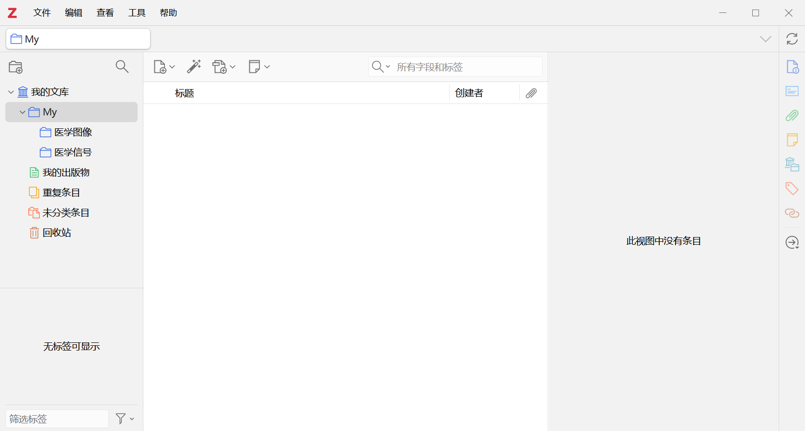
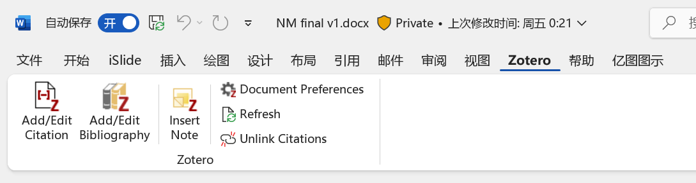

保存论文
- 从 Zotero 官网安装桌面程序和浏览器的 Zotero Connector。
- 打开 Zotero，新建分类，例如“医学图像”。分类用于组织条目，同一论文可以放在多个分类中。
- 在浏览器打开论文的出版页面，点击 Connector 图标，选择保存到的分类。
- 在 Zotero 中查看标题、作者、年份、DOI。展开条目检查是否附有 PDF；只有书目信息时，可把已取得的 PDF 拖到该条目下。


也可以点击工具栏中的标识符添加按钮，输入 DOI 添加条目。PDF 没有自动下载时，通常需要另行取得全文；条目与附件是两个独立部分。
阅读与整理
双击 PDF 打开阅读器，选中与任务有关的句子或图像并添加批注。批注可以只写术语解释或自己的疑问，需要时再查，不必为每篇文章另建一份笔记。
分类可以按研究方向建立；标签适合标记 segmentation、multimodal 等主题。在条目“标签”栏中添加即可，用左侧标签筛选相关论文。资料很少时，用标题搜索就足够。
翻译或信息显示插件属于选用功能。先完成保存、打开和引用一篇论文，再根据实际需要从 Zotero 中文社区插件目录了解扩展。
Word 引用
- 打开 Word，在正文中把光标放到需要引用的位置。
- 在 Zotero 选项卡点击 Add/Edit Citation，搜索条目标题并插入。
- 将光标放在文末，点击 Add/Edit Bibliography 生成参考文献表。
- 通过 Document Preferences 选择作业或目标期刊要求的引用格式，点击 Refresh 更新。

引用格式由具体作业或期刊决定，同一出版社的期刊也可能使用不同格式。只需要一条书目信息时，可以右键条目，选择“由所选条目创建参考文献”，再复制到文档。
补充教程：Zotero 官方入门；源教程推荐的 Zotero 视频。